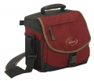

器材库 > 摄影包 > Nova 2

详细规格
产品类型
单肩挎包
发布日期
未知
内部尺寸
21.5 X 11 X 19.5cm
颜色
红色, 绿色, 棕色, 灰色
材质
防水600D TXPтм和防水600D TXPтм ripstop
exorcist2004-06-10 17:064.33 分
操作性 4.50功能性 4.50美观性 3.50趣味性 4.00耐用性 4.50性价比 5.00
徐戟2004-05-29 19:225 分
操作性 5.00功能性 5.00美观性 5.00趣味性 5.00耐用性 5.00性价比 5.00
headfan2004-04-28 18:104.33 分
操作性 4.00功能性 4.50美观性 5.00趣味性 4.00耐用性 4.00性价比 4.50
tsaijun2003-08-12 11:524.5 分
操作性 5.00功能性 5.00美观性 4.00趣味性 4.00耐用性 4.00性价比 5.00
mika2003-02-25 22:464.67 分
操作性 4.50功能性 4.00美观性 4.50趣味性 5.00耐用性 5.00性价比 5.00
产品图 / 样片
乐摄宝 Nova 2
评测 / 相关文章
该产品暂无存档的评测文章